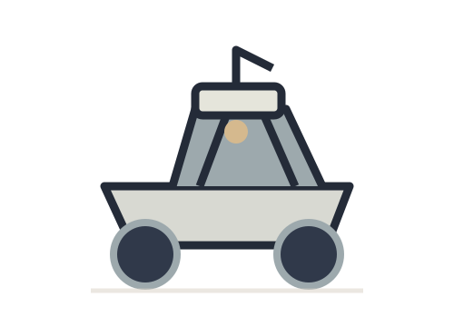

ІНТЕРАКТИВНА ВІЗУАЛЬНА НОВЕЛА
Самотні
сигнали
Дві далекі місії. Два ровери. Історії, які ще ніхто не почув.
ОБЕРИ, ДЕ ПОЧНЕТЬСЯ ТВОЯ ІСТОРІЯ
МІСЦЕ ПРИЗНАЧЕННЯ
Хто розповість
цю історію?
Обери ровера, щоб почути його спогади.

Ровер
ОСОБИСТИЙ ЖУРНАЛ
01 / 05